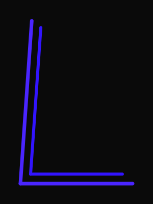
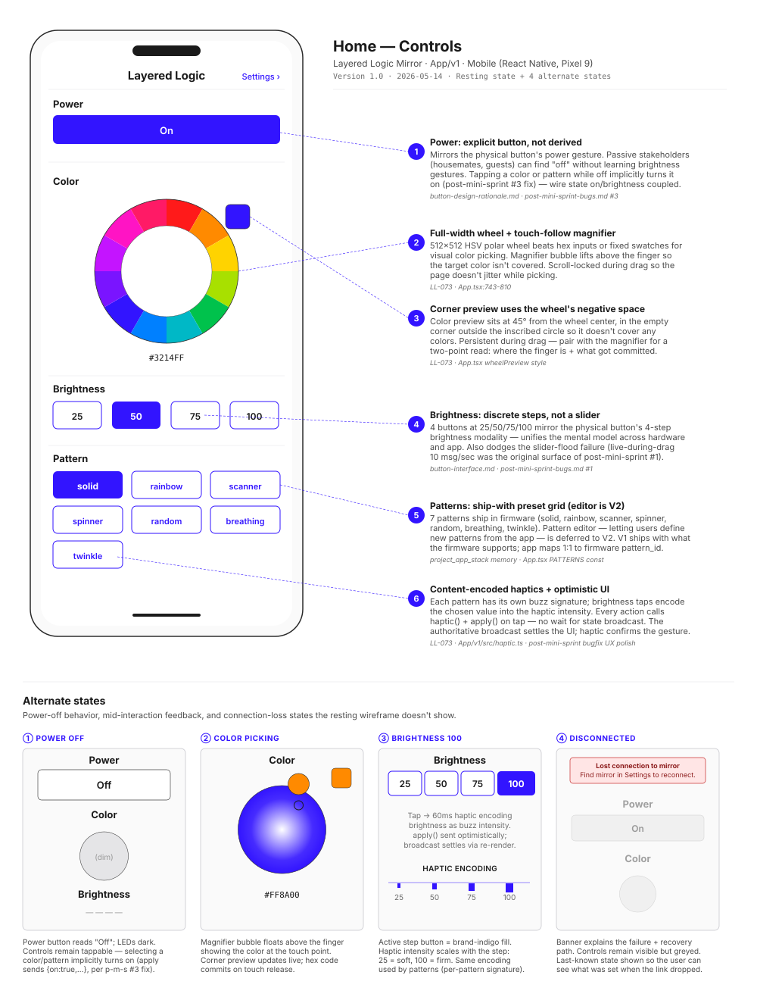
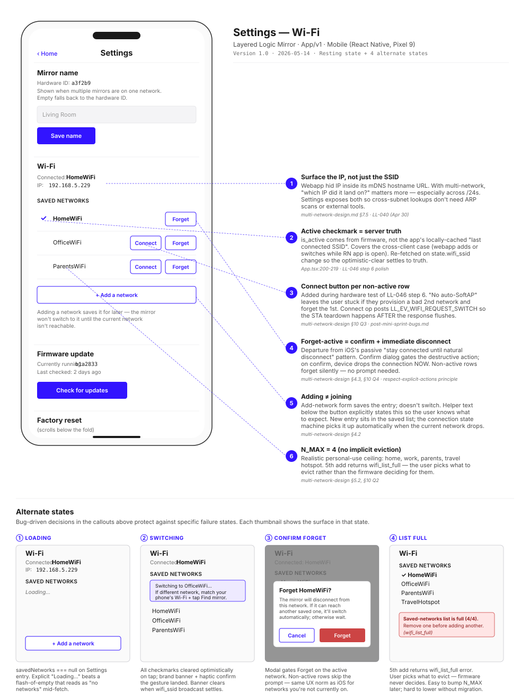
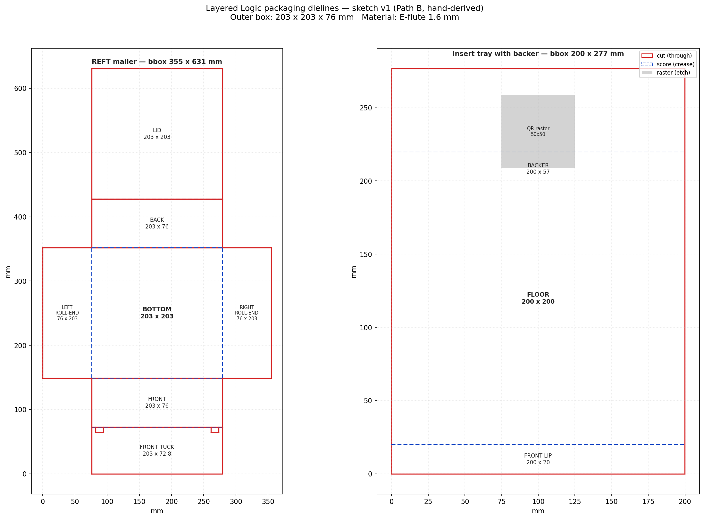
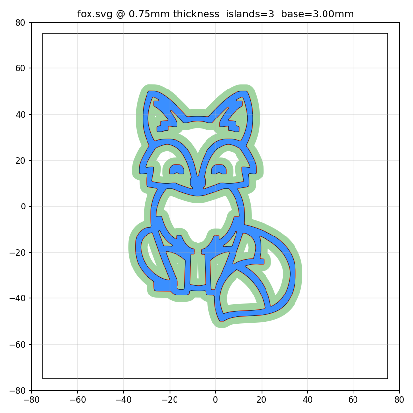

Brand mark · nested-L, indigo
Eleven weeks turning an infinity mirror into a near sellable product. Three lanes running at once, the work shown in public, and the dead ends left in.





A process is only honest if it names its own weak points. Here is what came easily this quarter, and what did not, with what I am doing about the parts that did not.
Every firmware change ran build, flash, boot capture, and on device measurement against a live mirror before it counted. The resilience work was proven with a soak test of 1,476 iterations at zero errors, not asserted.
The ten stage service blueprint, the stakeholder map, and the failure mode catalog treat the product as a system of interactions. The blueprint is the proof of the thesis, not a slide about it.
Parametric generators turn one customer SVG into a laser job, a 3D print, and a packaging dieline with no per order CAD. The instinct is to build the machine that builds the thing.
Decisions are captured with their rejected alternatives, so the reasoning survives. This page exists because the process was written down as it happened.
My weakest lane by a distance. The contact list sat stale for weeks, and pitching myself fights my instincts.
MITIGATINGTightened the cold message templates to one anchor idea and a peer tone, set a five a day cadence, and built a verified contact pipeline so that sending is a mechanical batch task instead of an emotional one.
The interview agenda has been ready since week 4, but talking to strangers about my own work is the part I most avoid, so the design rationale is still founder intuition more than validated fact.
MITIGATINGReframed interviews as ongoing and impromptu against a fixed agenda, with a venue sourcing method, rather than a milestone to schedule and dread.
I am fast at logic and slow to look. Plenty of UI verification got deferred to my next session.
MITIGATINGBuilt a scripted browser automation loop that injects test inputs and compares renders before any push. It already caught two rendering bugs that would have shipped.
I am stronger on the technical side than the legal and financial side of running a company.
MITIGATINGPolicy drafts ship with an explicit needs counsel review gate, and compliance is tracked as a living checklist with advisor check ins, so nothing is mistaken for settled.
By design, the quarter ends ready to sell, not sold. The goal was flip the switch readiness: every system in place so the only thing left is the decision to begin. These are the pieces still open, and they are roadmap, not shortfall.